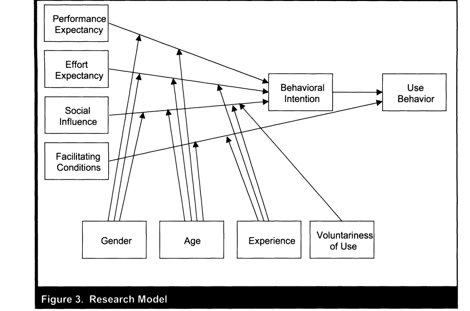
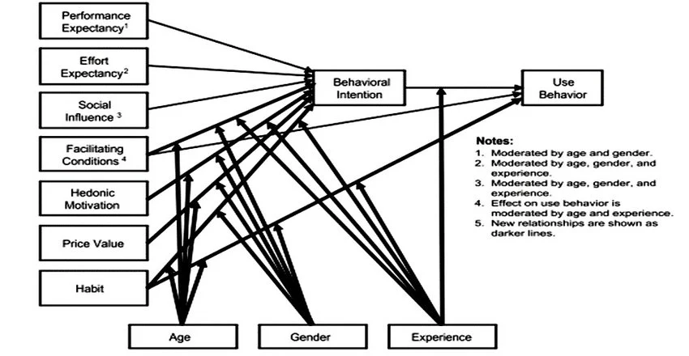
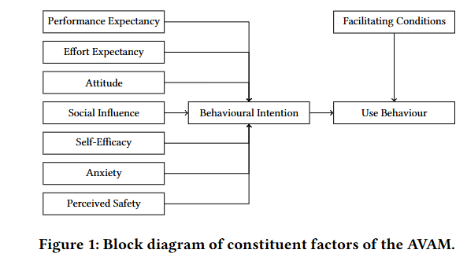
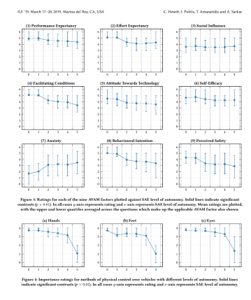
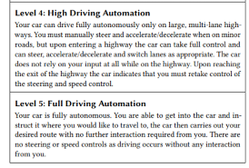

Public acceptance
Objective
passenger acceptence in connected autonomous shuttles, with a focus on anxiety
Unified models
| Model | Description | Variables | Note |
|---|---|---|---|
| Technology Acceptance Model (TAM, 1989) | TAM2: 2000 | ||
| Automation Acceptance Model (AAM, 2011) | extended TAM | ||
| Car Technology Acceptance Model (CTAM, 2012) | TAM + UTAUT | Anxiety is seen as one of the determinant variable | |
| Theory of Planned Behavior(TPB, 1991) | - attitude toward the behavior - subjective norm - perceived behavior control |
||
| Universal Theoryof Usage and Acceptance of Technology (UTAUT, 2003) | - 4 main (Performance Expectancy, Effort Expectancy, Social Influence, Facilitating Conditions) - 4 moderate (gender, age, experience, voluntariness of use) |
 |
|
| UTAUT2, 2015 | - hedonic motivation, price value, habit - Individual differences(age, gender, and experience as moderate factors) |
 |
|
| UTAUT 3, 2016 | distinguishes between individual-level contextual factors, higher-level contextual factors | ||
| multi-level model on automated vehicle acceptance(MAVA, 2019) | UTAUT3 + CTAM | - Exposure to AVs - Domain-specific system evaluation - Symbolic-affective system evaluation - Moral-normative system evaluation - Socio-demographics - Travel behavior - Personality |
SAE L4 & L5, autonomous shuttles included in L4 classes |
| Autonomous Vehicle Acceptance Model (AVAM, 2019) | an adaptation of the UTAUT and CTAM for autonomous vehicle technologies | Anxiety is seen as as one of the direct determinants  |
It assesses user perception towards SAE L0-L5 AVs from a driver's perspective(181/187 have a driving license) |
Extended frameworks
| Method | Description | Insights | Note |
|---|---|---|---|
| trust + perceived risk + TAM Zhang et al., 2019 | SAE L3 autonomous vehicle, survey in China, no trial | - Trust was the most critical factor in promoting AV acceptance - Perceived safety risk had a negative effect on acceptance through trust |
people without valid driving license were excluded from the survey |
| trust + perceived + personality traits + TAM Choi and Ji 2015 | |||
| trust + perceived safety + TAM Xu et al., 2018 | a field study in China, SAE L3, pre- and post- surveys | after the experience: trust, perceived usefulness, perceived ease of use + | users all uni students |
| initial trust + compatibility + TAM Huang et al. 2026 | SAE L4, bus drivers' acceptance towards autonomous buses, a survey in Taiwan | focuse on a moral dilemma scenario: the conflict between pedestrian and passenger safety | |
| trust + perceived risk + UTAUT(4 main variables) Kenesei et al.,2025 | SAE L5 autonomous vehicle, survey in Hungary, no trial | - trust and perceived risk are important mediators - trust has a significant impact on perceived risk and can influence adoption through its reduction |
the control variable a driving licence has no effect on adoption, suggesting that the trial of AVs will depend less on the possession of a driving licence and more on the building blocks of trust |
| CTAM + UTAUT Navas et al. 2022 | SAE L4, a trial in Rambouillet, France, a low-density area, post-ride survey only | anxiety: user did not feel anxious about using the vehicle; 55% believed necessary a safety driver inside the vehicle | study design: switch positions, so users can experience front (related to decision-making system) and back (related to environment detection) HMIs |
| UTAUT2 + TAM Vacca and Ko, 2025 | a survey in Seoul, didn't specify a certain SAE Level, but did contain questions about people's experience with semi-autonomous vehicles | - hedonic motivation, price value, performance expectancy: + ; risk perception: - ; - moderation effects of gender, age, experience with semi-autonomous vehicles |
people without driving experience were excluded from the survey |
| UTAUT2 (6 variables) Nordhoff et al. 2020 | a large-scale survey in EU (n=9118), SAE L3 | ||
| affective reactions (anxiety & pleasure) + knowledge Tan et al. 2022 | a survey in China, no trial, fully autonomous vehicles(SAE L5) | - pleasure, knowledge: + ; perceived benefit is a stronger mediator than perceived risk |
|
| stimulus-organism-response (SOR) + TPB Yao et al. 2025 | a survey in China, no trial, driverless robotaxi | social anxiety and perceived safety significantly affected intentions | |
| Cunningham et al. 2019 | SAE L5, a large-scale(n=5089) survey in Australia, no baseline model, shape questionnaire mainly through expert interview | - perceived benefits - perceived concerns - conditons of use - driving functions/tasks undertaken - engagement in activities when travelling - willingness to pay |
Demographic nuance
| Method | Description | Insights |
|---|---|---|
| disability and wellbeing Sharma et al. 2025 | a survey in UK, no trial, AV modes include buses | - affective and identity-based concerns are equally critical - explored how age, income, employment, and geography intersect with different types of disability |
| Sharma et al. 2026 | 8 focus groups (n=51) in UK, AV modes include buses | Methodology: Nvivo + RTA + Bayesian Regression |
| children Stange et al. 2025 | SAE L4, in a vehicle prototype, pre- and post- interviews, the vehicle was not allowed to be driven when user inside due to ethical concerns | child-friendly HMIs |
| elderly Batbold et al. 2025 | a systematic review | |
| Jia and Dou 2025 | a bibliometric analysis, summarise influencing factors and uncover future trends |
Filed deployments in autonomous shuttles context
| Method | Description | Insights | Note |
|---|---|---|---|
| UTAUT Debbaghi et al. 2024 | a survey in Brussels, autonomous shuttle experience in VR simulation, pre- and post- surveys | after the VR experience: - hedonic motivation no longer significant; environmental perception : + |
|
| UTAUT(5 variables) Singh et al., 2025 | SAE L3 autonomous shuttle, trial in India, can carry 4 passengers, an operator on board, each trip 4.4km at an average speed of 12 kmph | - hedonic motivation being identified as the strongest predictor variable - age young: +; gender female: - |
users are mainly campus students/staff with a mean age around 24 |
Possible ways to link anxiety with unified models
CTAM
The anxiety items in CTAM questions:
- I have concerns about using the system.
- I think I could have an accident because of using the system.
- The system is somewhat frightening to me.
- I fear that I do not reach my destination because of the system.
- I am afraid that I do not understand the system.
- I am confident that the system does not affect my driving.
AVAM
The anxiety items in AVAM questions:
- I would have concerns about using the vehicle.
- The vehicle would be somewhat frightening to me.
- I am afraid that I would not understand the vehicle.


The AVAM results show that anxiety remains relatively stable across L2–L4, but increases significantly when moving from L4-L5. This pattern aligns with the authors’ broader finding that users perceive only two levels of autonomy: partial and full, without being able to differentiate well between different levels of partial autonomy. Perceived engagement with hands, feet, and eyes remains relatively constant between the previous levels, but drops sharply between L4 and L5, indicating that users see Level 5 as categorically different rather than as an incremental extension of L4.
The authors didn't provide a direct interpretive basis for the significant rise in anxiety at L5. The scenario descriptions themselves have reinforce this shift: L4 requires the user retake control at highway exits, while L5 removes all controls, leaving no further interaction required from you. This transition eliminate the user's ability to intervene. Correspondingly, several acceptance related factors Facilitating Conditions, Perceived Safety, Behavioural Intention also decline significantly from L4 to L5, mirroring the same breakpoint observed in anxiety.
These results suggest that, the increased anxiety at L5 reflects a perceived loss of user control and supervisory authority, even though the authors didn't explicitly label it as loss of control, they present evidence that users view L5 as a context in which they can no longer meaningfully influence the driving task. Since almost all users (181/187) are licensed drivers and the survey was framed from a driver's point of view, the shift from L4 to L5 also constitutes a role transition, from in charge driver to passive passenger, which likely increase perceived uncontrollability and, consequently, anxiety.
UTAUT/UTAUT2
Building on existing integrated model of UTAUT and trust and perceived risk, possible hypothesis:
- anxiety - perceived risk +
- anxiety - trust -
- perceived risk - behaviour intention -
- trust - behaviour intention +
- anxiety - behaviour intention, directly or indirectly